Мастеринг в общих чертах
В первых строках статьи хочу сразу разъяснить значение термина «мастеринг». Итак, мастеринг – это доводка трека и подготовка его к выпуску на каком-либо из носителей (CD, DVD, аудио кассеты и т. д.). Все, что касается обработок и доводок отдельных дорожек относится к сведению и закладке дорожек, но это тема отдельной статьи.
Мастеринг бывает цифровым и аналоговым. Аналоговый мастеринг делается на достаточно дорогом и не очень распространенном оборудовании, зачастую недоступном, как по соображениям цены, так и просто по причине отсутствия в России, поэтому тонкости данного процесса я рассматривать не буду, хотя по сути оба этих вида достаточно родственны. Цифровой мастеринг делается на компьютерах и компьютерных станциях. И еще, ЛЮБОЙ мастеринг делается на сведенной стереопаре, за исключением мастеринга Dolby Surround и ему подобных, где задействовано 3 и более дорожек. Рассмотрим примеры мастеринга, возможного в домашних условиях. Есть много достойных программ, но я буду рассказывать на примере Sound Forge, причём не самой последней версии - v4.5, горячё любимого мной и Infected Mushroom :-)
С чего все начинается? А начинается все с того, о чем многие не знают или просто забывают. DC Offset. Что это такое? При рендеринге или оцифровке очень часто случается так, что рисунок волны отклоняется от центральной оси, что влечет за собой искажения звука и прочие неприятности. Чтобы избежать в дальнейшем лишней работы первым шагом ставим волну на место.
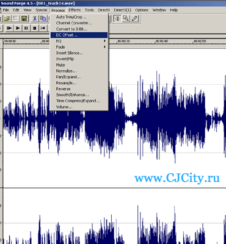
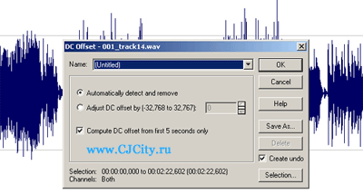
Теперь можно работать с файлом. Далее визуально оцениваем рисунок волны.
Уровень сигнала слишком низкий для того чтобы работать с ним. Делаем Normalize
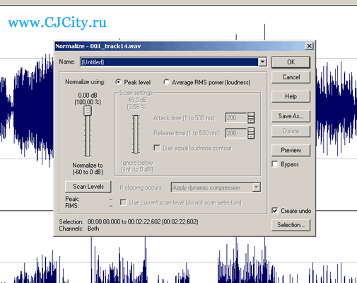
Уровень сигнала поднялся, но незначительно. Оставляем пока как есть, вернемся к этому позже.
Следующий шаг – расширение стереобазы. Необходимый, но часто упускаемый момент. Я использую для этого Direct x плагин Hiperprism Quasi-Stereo (прим. редакции - этот плагин сложно найти где-либо, т.к. очень старый, вместо него можно использовать Izotope Ozone).
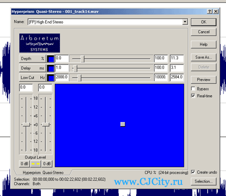
Настройки этого и остальных приведенных ниже приборов индивидуальны, подберите себе параметры которые больше всего будут отвечать Вашему произведению и звучанию.
Далее, внимательно прослушиваем трек, если звучание слишком плотное, а вам бы этого не хотелось, поправить дело можно с помощью TC Native эквалайзера, в народе именуемого «расческа». Но все же, лучше избегать применения этого эквалайзера при мастеринге, лучше «расчесывать» слишком плотные дорожки на этапе сведения.
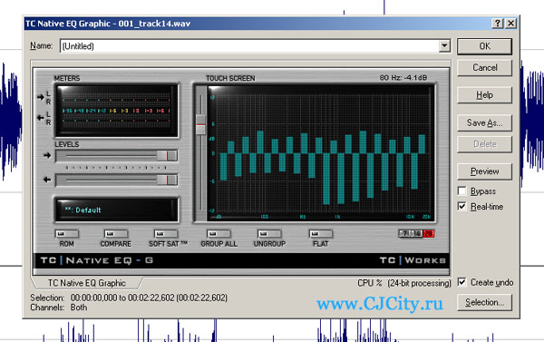
TC Works Native Bundle
Теперь рассмотрим несколько вариантов продолжения мастеринга.
1. Частотная компрессия. Очень тонкая, но при этом очень качественно изменяющая звучание процедура. Я использую Steinberg Mastering Compressor. Он эффективен нагляден и прост в управлении, кроме того сочетает в себе как частотный так и классический компрессоры. Прелесть частотного компрессора в том что он компрессирует только указанный диапазон частот. Т. е. каждый диапазон Вы можете компрессировать отдельным компрессором, не влияющим на соседние.
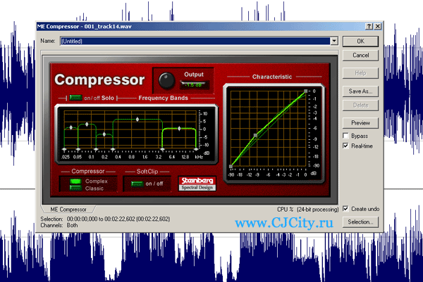
Steinberg Mastering Compressor
Чтобы было ясно, Mastering Compressor входит в пакет для профессиональной обработки звука Steinberg Mastering Edition, который помимо компрессора включает в себя также:
2. Если Вы делали свою тему стремясь приблизиться к звучанию определенного трека, то Вам поможет Steinberg Free Filter. Остановлюсь на нем подробнее ибо он мне в свое время спас много крови и нервов :-).
Открываем в форже трек, частотку и динамику которого мы хотим себе беспардонно присвоить.
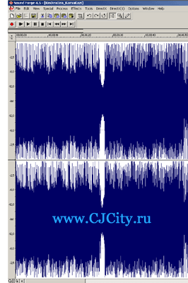
Открываем фрифильтр нажимаем клавишу Source и далее Preview. Прослушиваем трек до конца, и сохраняем пресет. Я обычно называю по автору. В данном случае это будет пресет Kin Dza Dza.
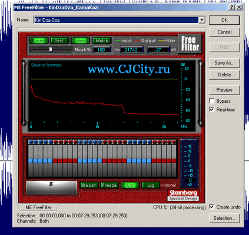
Steinberg Free Filter
Теперь закрываем чужой трек и переходим к своему. Запускаем фрифильтр, выбираем подготовленный пресет, нажимаем кнопку Dest и далее Preview.
Прослушиваем трек, прибор проанализирует волну. Жмем Match (обсчитать). При хорошем навыке можно добиться фантастических результатов, следите только чтобы трек после обработки не клиповал. Чтобы этого избежать заранее я при сканировании чужого трека уменьшаю ему громкость примерно на 6 – 8 Дб.
Ну и сразу хочу предупредить, фрифильтр дополняет, но не исправляет Ваше звучание, если были огрехи в сведении – при таком развитии мастеринга они вылезут еще больше.
Следующий этап в большинстве случаев тоже необходим, разве что после фри фильтра нет надобности его использовать. Этот этап – добавление прозрачности или как говорят звукоинженеры «воздуха». Для этого очень подходит Steinberg Spectralizer.
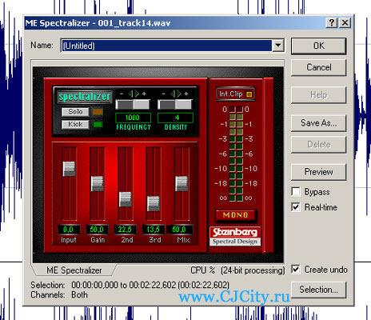
Steinberg Spectralizer
Покрутите ручки, почувствуйте разницу, кнопка соло поможет Вам выделить необходимый диапазон воздуха. Кроме этого прибора воздух можно добавить с помощью Эксайтера, производимого различными конторами.
Иногда для придания сочности и плотности звучанию используют прибор – Magneto. Это эмулятор эффекта пленки многоканального магнитофона. Помогает убрать пластмассовость звучания. Прибор из разряда психоаккустических, прост в настройке подойдет даже новичкам.
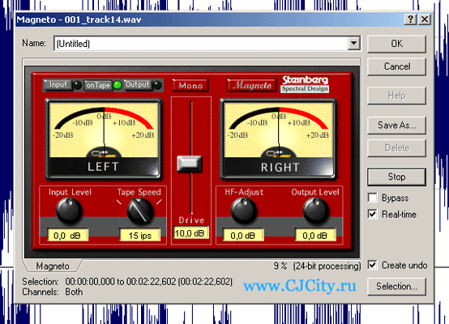
Steinberg Magneto
Предпоследний этап – поднятие общей громкости. Этап вызывающий очень много вопросов и споров. Самый неверный и убийственный способ – это компрессия или лимитирование с нормализацией. Грабли, по которым прошли целые поколения звукоинженеров-самоучек. Признаюсь, я и сам по ним прошел, и очень долго был уверен в своей правоте. До тех пор пока не познакомился с психоаккустическими приборами. Один из таких приборов – Loudness Maximizer
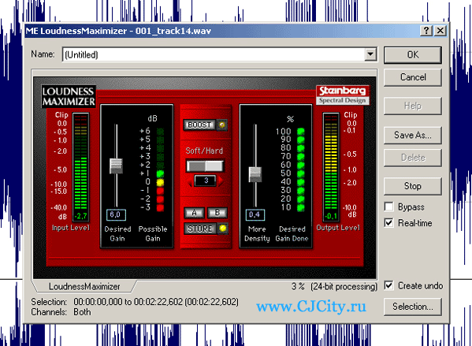
Steinberg Loudness Maximizer
В чем заключается его принцип? А принцип его прост. Он поднимает уровень звука до пика, а потом более того. Он поднимает определенные частоты и создает ИЛЛЮЗИЮ более громкого звучания не искажая частотной характеристики трека. Любой прибор Вам покажет что клипов и пиков нет и громкость трека «в нуле», но на слух все становится гораздо громче. На самом деле это кажется, что громче, на то и психоаккустика, но думаю Вы поверите мне на слово ибо совершенно не хочется в данной статье углубляться в анатомию человека и физику звука.
И последний завершающий этап – нарезка мастер-диска. Советую для этого использовать только дорогие и качественные болванки, чтобы у Вас не возникли проблемы при сдаче в тираж.
На последок хочу обратить Ваше внимание на несколько моментов.
1. При сведении не поднимайте сильно высокочастотные звуки, типа железа, флейты и т.п. потому, что при добавлении воздуха они еще поднимутся.
2. Внимательно следите за изменением звука на всех этапах мастеринга, не допускайте клипов. Используйте по возможности 2 типа мониторов - дальние и ближние, при наличии опыта в качестве ближних мониторов можно использовать наушники.
3. При поднятии громкости максимайзером не переусердствуйте иначе на мощном аппарате ваш трек будет звучать с изрядным перегрузом.
4. При расширении стереобазы следите за тем чтоб звуки в треке оставались целостными, не замыливались и не резонировали.
Алексей Карлин (Mushroom MC), 22.01.2006